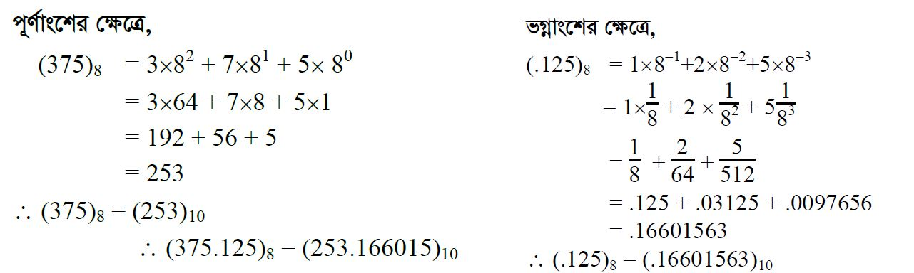
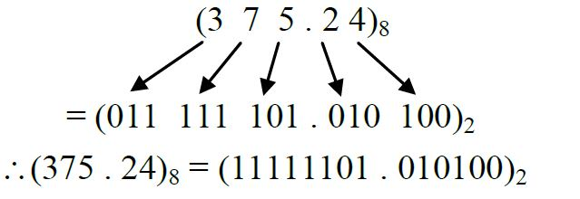
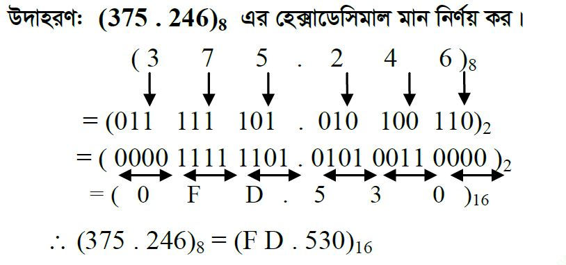

অক্টাল সংখ্যাকে ডেসিমেল সংখ্যায় রূপান্তরঃ
পূর্ণ সংখ্যার ক্ষেত্রে-
১। সংখ্যাটিকে LSB(Least Significant Bit) বিট হতে শুরু করে MSB( Most Significant Bit) বিট পর্যন্ত প্রতিটি অঙ্ককে পর্যায়ক্রমে 8n দ্বারা গুণ করতে হবে। যেখানে n=0,1,2,3…….
২। অতঃপর গুণফলগুলোর যোগফল নির্ণয় করতে হবে।
৩। প্রদত্ত যোগফলই হবে অক্টাল সংখ্যাটির সমতুল্য ডেসিমেল মান।
ভগ্নাংশের ক্ষেত্রে-
১। সংখ্যাটিকে MSB( Most Significant Bit) বিট হতে শুরু করে LSB(Least Significant Bit) বিট পর্যন্ত প্রতিটি অঙ্ককে পর্যায়ক্রমে 8n দ্বারা গুণ করতে হবে। যেখানে n= -1,-2,-3…….
২। অতঃপর গুণফলগুলোর যোগফল নির্ণয় করতে হবে।
৩। প্রদত্ত যোগফলই হবে অক্টাল সংখ্যাটির সমতুল্য ডেসিমেল ভগ্নাংশ মান।
উদাহরণ-1 : (375.125)8 কে ডেসিমেল সংখ্যায় রূপান্তর:

অক্টাল সংখ্যাকে বাইনারি সংখ্যায় রূপান্তর:
পূর্ণ সংখ্যা এবং ভগ্নাংশের ক্ষেত্রে একই নিয়ম–
১। অক্ট্যাল সংখ্যার প্রতিটি ডিজিটের তিন বিট বাইনারি মান লিখতে হবে। (প্রতিটি ডিজিটের বাইনারি মান ৩। বিটের কম হলে বাম পার্শ্বে প্রয়োজনীয় সংখ্যক শুন্য বসিয়ে ৩-বিট পূর্ণ করতে হবে।)
২। অবশেষে প্রাপ্ত বাইনারি মান গুলিকে পাশাপাশি সাজিয়ে লিখলে অক্ট্যাল সংখ্যাটির সমতূল্য বাইনারি সংখ্যা পাওয়া যাবে।
উদাহরণ-1 : (375.125)8 কে বাইনারি সংখ্যায় রূপান্তর:

অক্টাল সংখ্যাকে হেক্সাডেসিমেলে রূপান্তর
অক্টাল সংখ্যাকে হেক্সাডেসিমেলে রূপান্তরের একাধিক পদ্ধতি রয়েছে।
যথা: অক্টাল → দশমিক → হেক্সাডেসিমেল; অথবা-
অক্টাল → বাইনারি → হেক্সাডেসিমেল ।
অক্টাল → বাইনারি → হেক্সাডেসিমেল পদ্ধতিটি তুলনা মূলক সহজ ও সুবিধা জনক। পদ্ধতিটি হল−
১. কোনো অক্টাল সংখ্যাকে হেক্সাডেসিমেলে রূপান্তর করতে হলে প্রথমে সংখ্যাটির সমতুল্য বাইনারি মান নির্ণয় করতে হবে।
২. অতঃপর বাইনারি সংখ্যাকে হেক্সাডেসিমেলে রূপান্তরের জন্য চারটি করে বাইনারি ভিজিট দিয়ে একটি করে হেক্সাডেসিমেল অঙ্ক/ ভিজিট গঠন করতে হয়।
